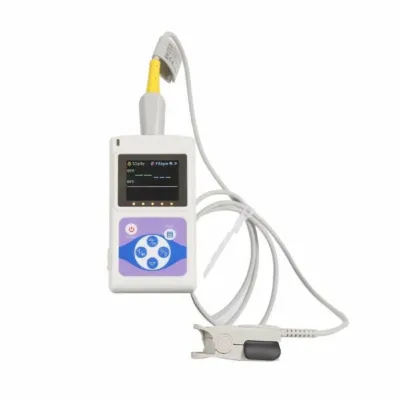

Профессиональный пульсоксиметр CMS 60D
Цена, наличие и срок поставки указываются в коммерческом предложении.
Описание и характеристики
Общие сведения
Пульсоксиметр CMS60D работает по технологии фотоэлектрического определения оксигемоглобина и сканирования пульсовой волны. Измеряет SpO2 и пульс на пальце. Подходит для больниц, кислородных баров, амбулаторной практики и спортивной медицины (можно использовать до и после тренировки, во время упражнений — не рекомендуется).
Особенности
1. Компактный, лёгкий, удобно носить с собой.
2. Прост в управлении, низкое энергопотребление.
3. Функциональное меню.
4. Отображение SpO2.
5. Отображение пульса и столбиковой диаграммы.
6. Отображение пульсовой волны.
7. Регулируемая яркость экрана, звуковая индикация пульса.
8. Просмотр сохранённых данных.
9. Часы.
10. Звуковой сигнал при выходе за пределы и низком заряде.
11. Индикация состояния батареи.
12. Индикация низкого заряда.
13. Сохранение значений SpO2 и пульса с передачей на ПК.
14. Передача данных на ПК в реальном времени.
15. Возможность подключения внешнего датчика SpO2.
Характеристики
Дисплей: цветной
Диапазон измерения SpO2: 0–100 % (шаг 1 %)
Точность: 70–100 %: ±2 %; 0–69 %: не нормируется
Диапазон измерения пульса: 30–250 уд/мин (шаг 1 уд/мин)
Точность: ±2 уд/мин или ±2 % (большее из значений)
При слабом наполнении пульса: SpO2 и пульс отображаются корректно при коэффициенте наполнения 0,4 %; погрешность SpO2 ±4 %, пульса ±2 уд/мин или ±2 % (большее из значений)
Устойчивость к внешнему освещению: отклонение от показаний в тёмной комнате — менее ±1 % при искусственном или естественном освещении
Потребляемый ток: ≤ 100 мА
Напряжение: 3,0 В пост. тока
Питание: две батарейки AA
Время непрерывной работы: до 44 часов (теоретически)
Класс безопасности: оборудование с внутренним питанием, рабочая часть типа BF
Физические параметры
Размеры: 110 × 60 × 24 мм (Д × Ш × В)
Вес: около 120 г (с батарейками)
Другие товары раздела
Весь раздел


Если нужно полное оснащение кабинета или отделения, напишите. Составим список вместе.